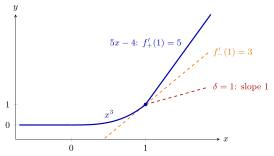

One-Sided Derivatives and Convexity¶
Proposition¶
For defined around , the right and left derivatives are and . In parts 1–3, is an open interval.
- If is differentiable on , then is convex on if and only if is nondecreasing on . If is strictly increasing on , then is strictly convex on .
- If is twice differentiable on , then is convex on if and only if on . If on , then is strictly convex on .
- If is convex on , then has a right and a left derivative at every point of , and for all in .
- Gluing. Let be continuous on an interval (not necessarily open) and let be an interior point of . If is convex on and on , and has a left and a right derivative at with , then is convex on .
Interpretation¶
In one variable, convexity means that the slope never decreases as you move to the right. The derivative tests, the inequality between one-sided derivatives and the gluing rule are three forms of this idea.

The figure is Example 3 below with and : is for , on and for . At the joint the left derivative is , the slope of the dashed tangent , and the right derivative is . The slope jumps up, and is convex. With continuity forces , and the line , dashed, would drop the slope from to , which part 3 forbids.
The chain says two things. At a single point the slope may jump up, as for at , where it jumps from to , but never down; , whose slope drops from to , is not convex. And every slope at is at most every slope at a later point . The slope of the chord lies between and , which links this to the mean value theorem picture of Math I.
The gluing rule turns this into a checklist for a piecewise function: each piece convex, continuity at the joint, and slope not dropping there. Continuity cannot be skipped, since a convex function is continuous at interior points. The interval in parts 1–3 is open because at an endpoint a convex function need not have a finite one-sided derivative (Example 4 below). The tests in part 2 need to exist on all of ; one positive value of at a point proves nothing, and is sufficient but not necessary for strict convexity, as shows.
These are Math I's convexity criteria with one-sided derivatives added for kinks. In they apply along lines: is convex exactly when its restriction to every line is convex, which leads to Math IV's Hessian test.
Key Results¶
- On an open interval , a differentiable is convex if and only if is nondecreasing, and strictly convex if is strictly increasing.
- On an open interval , a twice differentiable is convex if and only if , and strictly convex if ; is strictly convex with .
- A convex on an open interval has one-sided derivatives everywhere, with for .
- Gluing criterion: continuous, convex on both sides of an interior point , and together imply convexity on (Example 1 below).
- is convex if and only if is convex for all .
Examples¶
1. Gluing a line to a parabola. Let for and for . Both pieces are convex. Continuity at requires . Then and , so the gluing rule gives convexity for ; for the slope drops at , which part 3 forbids, so is not convex. Hence is convex exactly for
For , the line is the tangent to at . For , the function is continuous but exceeds , the average of the values and at and .
2. An endpoint versus an interior joint. The piece is convex (), tends to as , and has left derivative at . For on , equal to on and to at , the point is an endpoint: is convex exactly when , a jump up being allowed there. For on , equal to on and to for , the point is interior: is convex exactly when (continuity) and (slope).
3. Two joints. Let for , for and for . At both one-sided derivatives are , and is convex on because its second derivative is nonnegative there. At , continuity requires and the left derivative is . So is convex exactly when and . For this gives ; for no works, since is forced and then the slope drops from to .
4. No finite derivative at an endpoint. The lower semicircle is convex on : it is the lower boundary of the unit disc, and the infimum of each vertical slice of a convex set is a convex function (see epigraph). On , . At the endpoint , however, the difference quotient tends to as , so has no right derivative at in the sense of the limit defined above.
Prerequisites¶
- One-Sided Derivative
- Convexity and Concavity
- Monotone Function
- Strictly Convex Function
- Continuity of Convex Functions
Related Concepts¶
- Epigraph
- Operations Preserving Convexity of Functions
- Hessian Test for Convexity and Concavity
- Mean Value Theorem
- Second-Order Condition
- Local Minimum of a Convex Function
Sources¶
- Math VI: Convexity and Optimization · Week 1
- H. E. Nusse and M. Dienstknecht, Math VI: Convexity and Optimization, lecture notes 2026–2027, Section 0.5
Aliases: derivative test for convexity, second derivative test for convexity, gluing convex functions, piecewise convex function Keywords: f'{-}(a)\leq f', f''\geq0, f''>0, gluing two convex pieces at a point, left and right derivative Symbols: alpha, beta, delta, element of, infinity, intersection, lambda, phi, real numbers, square root, subset }(a)\leq f'_{-}(b), f'\text{ nondecreasing
Last updated: 5 November 2026 12:47
One-Sided Derivatives and ConvexityOne-Sided DerivativeConvexity and ConcavityMonotone FunctionStrictly Convex FunctionContinuity of Convex FunctionsEpigraphOperations Preserving Convexity of FunctionsHessian Test for Convexity and ConcavityMean Value TheoremSecond-Order ConditionLocal Minimum of a Convex Function